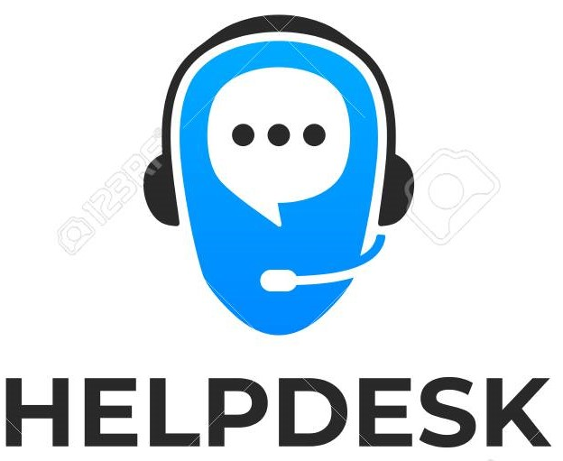
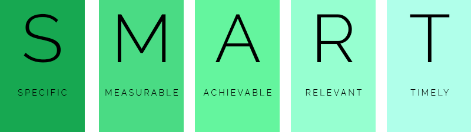

Support Service
Operation Plan People
By: Michael Vera

S.M.A.R.T. Goal #1
Increase customer satisfaction by 10% for 2020 by increasing training and education to our HelpDesk team.
Customer Benefits
We believe that helfulp and knowlegeable employees will make for happier customers
Processes
- Orientation Training Plan: We will enhance our onboarding and training process for new employees part of our HelpDesk.
- Career Development Plans: All members of the HelpDesk will take 8 hours of monthly mandatory training towards mandatory certifications.
- Ongoing Skill Assessment and Training Plans: Our HelpDesk team will have access to own demand online training 24/7
to be access at their convenience towards developing soft skills and optional certifications.
- Compensation Program: Our HelpDesk team will receive bonuses for every technical certification achieve.
- Service Improvement Plans: We will introduce customer survey process to monitor customer satisfaction.
- Physical Environment and Ergonomics: We will reassess and improve current equipment replacing it
with ergonomic and advanced technical equipment.
- Stakeholder Engagement: We will encourage anonymous customer feedback.
Measurements
- Ongoing Skill Assessment and Training Plans: We will measure our employees training monthly.
- Stakeholder Engagement: We will track customer satisfaction surveys weekly.
- Service Improvement Plans: We will provide monthly report to our clients on resolves of survey taken.
© Help Desk Management FALL 2020. All Rights Reserved.